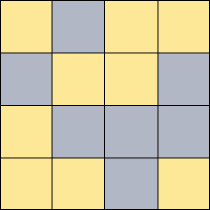

Switch

Switch is a puzzle game in which you are given 2 grids and must make them look the same by changing their elements.
Clicking on a square from the left grid will change its and its neigbours color.
Currently in alpha(α)
Singleplayer
Gomoku

Gomoku is a table game also known as five in a row in which two players place pieces on a 15x15 grid. The fisrt player who lines up 5 pieces on vertical, horizontal or diagonal wins.
Players place pieces in turns by clicking on a square from the grid, one piece per turn.
Currently in alpha(α)
Local Multiplayer